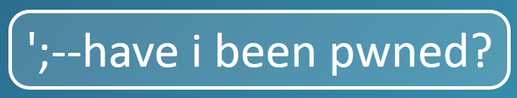
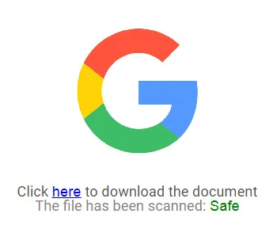
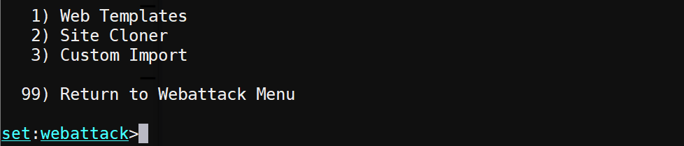
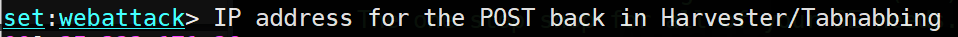
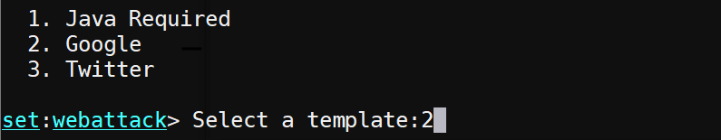
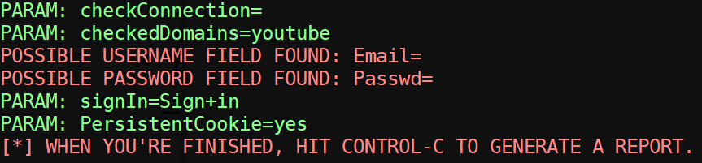
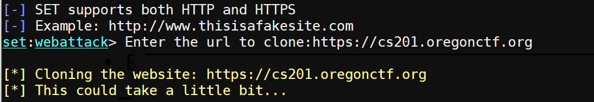

Join the following room on TryHackMe:https://tryhackme.com/room/hydra. The room uses the Hydra tool for performing credential spraying attacks using a set of well-known usernames and passwords. Note that knowledge of HTML forms and form submission is required. If you do not have prior experience with it, click here for a tutorial on HTML forms. Complete the exercise.

Visit the HaveIBeenPwned website at https://haveibeenpwned.com/ . Lookup your @pdx.edu e-mail address and a personal email address.
Visit https://haveibeenpwned.com/Passwords. Lookup the following passwords:
123456 password iloveyou abc123 princess
The Social Engineer Toolkit (SET) is an open-source Python-based suite of tools for performing advanced attacks against the human element. The tasks that it supports are comprehensive and include:
We'll be using SET to demonstrate how an adversary might attempt to hijack Authentication by phishing users with a look-alike page. SET comes with the Kali distribution. To begin with, bring up the Kali VM, record its external IP address (kali_external_IP), and ensure HTTP traffic is enabled. Log into the VM and launch the toolkit from the command line.
sudo setoolkit
SET provides functions to create e-mail phishing lures, to attach malicious payloads to them, and to mass mail them to a list of victims so that when victims click on them, they execute rogue code or are redirected to fake sites that can steal their credentials. Consider the following lure that is sent that attempts to trick victims into clicking on a document that might be hosted on Google.

When a victim clicks on the link, an adversary would want to redirect them to a site that the adversary controls that impersonates a Google login page. We'll use SET to set up the page the link points to.
From the main menu, select "Social-Engineering Attacks", then "Website Attack Vectors", and then "Credential Harvester Attack Method" to reach the Webattack method selection menu. Choose the "Web Templates" method.

When prompted for an IP address for the POST back, enter the Kali VM's external IP address (kali_external_IP).

Select "Google" for the template to use. When the victim enters credentials into the "fake" Google site, the credentials will be recorded and then the victim will be redirected to the legitimate Google site.

Visit the fake site using the external IP address of the Kali VM in a local browser. (e.g. http://). Note that you can also click on the external IP address of the VM from the Compute Engine console to visit the application. If the connection fails, ensure that you have allowed HTTP traffic to your VM.
Enter your @pdx.edu e-mail address as a user name and a bogus password to login. You will be redirected to the Google homepage. Go back to the SET console and find the credentials that have shown up.

Enter Ctrl+c to terminate the fake site, then exit out of SET completely before continuing to the next step.
Launch SET again and navigate back to the Webattack method selection menu for credential harvesting attacks. This time, instead of using a web template, we'll have SET clone an arbitrary site before hosting it. Choose the "Site Cloner" option.
When prompted for an IP address, use the kali_external_IP address again. Then, when prompted for a URL to clone, enter in the CS 201 CTF site: https://cs201.oregonctf.org)

Visit the fake site using the external IP address of the Kali VM in a local browser. (e.g. http://).
Enter your @pdx.edu e-mail address as a user name and a bogus password to login. You will be redirected to the original CS 201 CTF homepage. Go back to the SET console and find the credentials that have shown up.